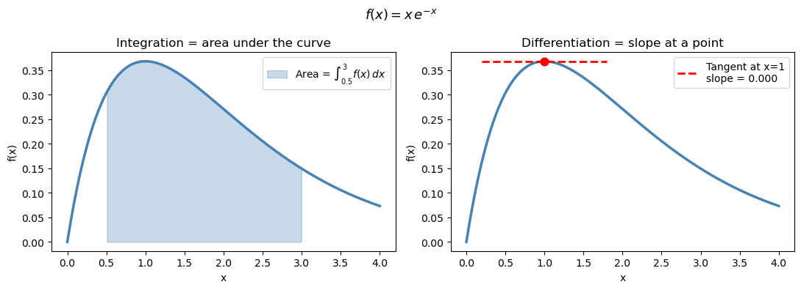
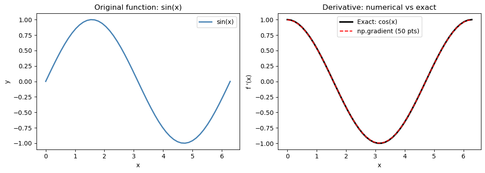
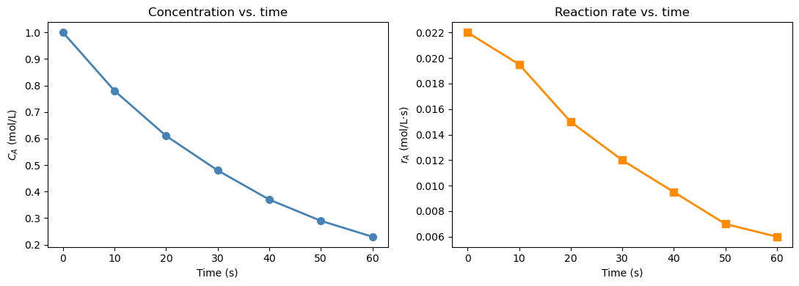
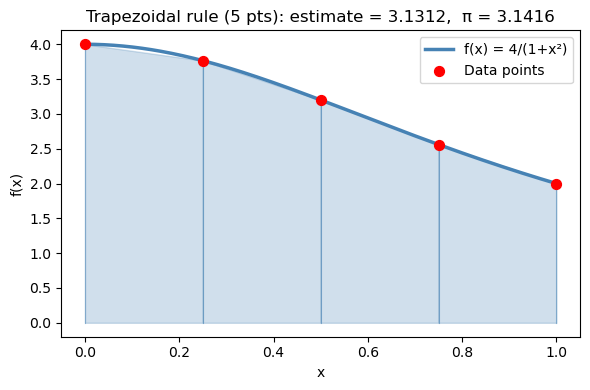
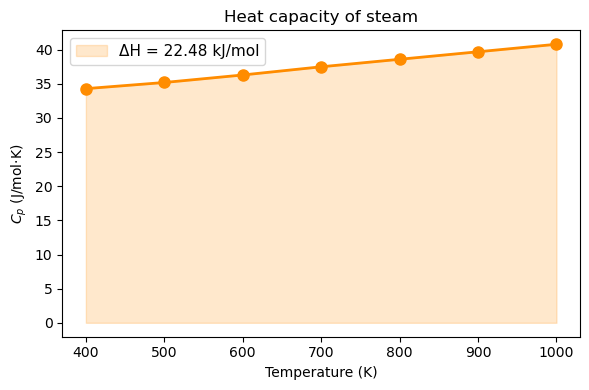
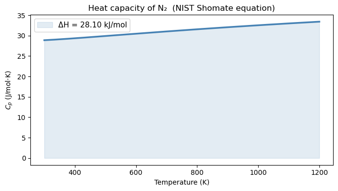

Chapter 15: Numerical Integration and Differentiation#
Topics Covered:
Numerical differentiation with
np.gradientTrapezoidal rule:
scipy.integrate.trapezoidGeneral-purpose quadrature:
scipy.integrate.quadCumulative integration:
scipy.integrate.cumulative_trapezoidChE application: PFR design and the Levenspiel integral
Motivation: Two Problems You Can’t Solve by Hand#
Problem 1 — How much heat does it take?
The heat capacity of nitrogen gas is not constant — it varies with temperature. To heat 1 mol of N₂ from 300 K to 1200 K, you need:
where \(C_p(T)\) follows the NIST Shomate equation. You could try to integrate this polynomial by hand, but what if your \(C_p\) data comes from a table of measurements rather than a formula?
Problem 2 — What is the reaction rate at each time step?
In a batch reactor experiment, you measure concentration \(C_A\) at discrete time points. The reaction rate is: $\(r_A = -\frac{dC_A}{dt}\)$
But you don’t have a formula for \(C_A(t)\) — only a table of numbers. How do you compute a derivative from data?
Both problems need numerical methods. Let’s look at the tools Python gives us.
import numpy as np
import matplotlib.pyplot as plt
from scipy.integrate import quad, trapezoid, cumulative_trapezoid
15.1 The Core Idea: Integration and Differentiation Geometrically#
Before writing any code, let’s make the geometry clear.
Integration = the area under a curve between two limits
Differentiation = the slope of a curve at a point
When you have a smooth analytic function, calculus gives exact answers. When you have discrete data or a complicated expression, you use numerical approximations instead.
x = np.linspace(0, 4, 300)
f = x * np.exp(-x)
fig, axes = plt.subplots(1, 2, figsize=(11, 4))
# Left: integration = area under curve
ax = axes[0]
ax.plot(x, f, 'steelblue', linewidth=2.5)
mask = (x >= 0.5) & (x <= 3.0)
ax.fill_between(x[mask], f[mask], alpha=0.3, color='steelblue', label=r'Area = $\int_{0.5}^{3} f(x)\,dx$')
ax.set_xlabel('x'); ax.set_ylabel('f(x)')
ax.set_title('Integration = area under the curve')
ax.legend(fontsize=10)
# Right: differentiation = slope at a point
ax = axes[1]
ax.plot(x, f, 'steelblue', linewidth=2.5)
x0 = 1.0
f0 = x0 * np.exp(-x0)
dfdx0 = np.exp(-x0) - x0 * np.exp(-x0) # exact derivative: e^{-x}(1-x)
x_tan = np.linspace(0.2, 1.8, 50)
ax.plot(x_tan, f0 + dfdx0 * (x_tan - x0), 'r--', linewidth=2, label=f"Tangent at x=1\nslope = {dfdx0:.3f}")
ax.scatter([x0], [f0], color='red', s=60, zorder=5)
ax.set_xlabel('x'); ax.set_ylabel('f(x)')
ax.set_title('Differentiation = slope at a point')
ax.legend(fontsize=10)
plt.suptitle(r'$f(x) = x\,e^{-x}$', fontsize=13)
plt.tight_layout()
plt.show()

15.2 Numerical Differentiation: np.gradient#
When you have a table of \((x, y)\) values and want \(dy/dx\), np.gradient is the tool.
It uses the central difference formula at interior points: $\(f'(x_i) \approx \frac{f(x_{i+1}) - f(x_{i-1})}{x_{i+1} - x_{i-1}}\)$
and one-sided differences at the endpoints. The result is an array of the same length as the input — one derivative value per data point.
Key syntax:
dydx = np.gradient(y, x) # always pass x when your spacing is not 1
15.2.1 Verification on a known function#
Let’s check np.gradient against the exact derivative of \(\sin(x)\) (which is \(\cos(x)\)) before applying it to real data.
x_sin = np.linspace(0, 2 * np.pi, 50)
y_sin = np.sin(x_sin)
# Numerical derivative
dy_num = np.gradient(y_sin, x_sin)
# Exact derivative
dy_exact = np.cos(x_sin)
max_error = np.max(np.abs(dy_num - dy_exact))
print(f"Max absolute error vs exact cos(x): {max_error:.2e}")
fig, axes = plt.subplots(1, 2, figsize=(11, 4))
ax = axes[0]
ax.plot(x_sin, y_sin, 'steelblue', linewidth=2, label='sin(x)')
ax.set_xlabel('x'); ax.set_ylabel('y')
ax.set_title('Original function: sin(x)')
ax.legend()
ax = axes[1]
ax.plot(x_sin, dy_exact, 'k-', linewidth=2.5, label='Exact: cos(x)')
ax.plot(x_sin, dy_num, 'r--', linewidth=1.5, label='np.gradient (50 pts)')
ax.set_xlabel('x'); ax.set_ylabel("f '(x)")
ax.set_title('Derivative: numerical vs exact')
ax.legend()
plt.tight_layout()
plt.show()
Max absolute error vs exact cos(x): 2.74e-03

15.2.2 Reaction rate from concentration data#
In a batch reactor experiment, \(C_A\) is measured at discrete time points. The rate of disappearance of A is: $\(r_A = -\frac{dC_A}{dt}\)$
We only have a table of numbers — no formula — so np.gradient is the right tool.
t = np.array([0, 10, 20, 30, 40, 50, 60 ]) # s
C_A = np.array([1.00, 0.78, 0.61, 0.48, 0.37, 0.29, 0.23]) # mol/L
# Reaction rate: r_A = -dC_A/dt
# IMPORTANT: pass t as the second argument — spacing is 10 s, not 1
r_A = -np.gradient(C_A, t)
print(f"{'t (s)':>6} {'C_A (mol/L)':>12} {'r_A (mol/L·s)':>14}")
print("-" * 38)
for i in range(len(t)):
print(f" {t[i]:>4.0f} {C_A[i]:>12.3f} {r_A[i]:>14.5f}")
fig, axes = plt.subplots(1, 2, figsize=(11, 4))
ax = axes[0]
ax.plot(t, C_A, 'o-', color='steelblue', linewidth=2, markersize=7)
ax.set_xlabel('Time (s)'); ax.set_ylabel('$C_A$ (mol/L)')
ax.set_title('Concentration vs. time')
ax = axes[1]
ax.plot(t, r_A, 's-', color='darkorange', linewidth=2, markersize=7)
ax.set_xlabel('Time (s)'); ax.set_ylabel('$r_A$ (mol/L·s)')
ax.set_title('Reaction rate vs. time')
plt.tight_layout()
plt.show()
t (s) C_A (mol/L) r_A (mol/L·s)
--------------------------------------
0 1.000 0.02200
10 0.780 0.01950
20 0.610 0.01500
30 0.480 0.01200
40 0.370 0.00950
50 0.290 0.00700
60 0.230 0.00600

15.3 Numerical Integration of Discrete Data: Trapezoidal Rule#
When you have a table of \((x, y)\) values and want \(\int y \, dx\), the simplest method is the trapezoidal rule: connect neighboring points with straight lines and sum the trapezoid areas.
scipy.integrate.trapezoid(y, x) implements this in one line.
15.3.1 Building intuition: visualizing trapezoids#
Let’s integrate \(f(x) = \frac{4}{1+x^2}\) from 0 to 1, whose exact answer is \(\pi\). We’ll use only 5 points so the trapezoids are visible.
def f_pi(x):
return 4.0 / (1.0 + x**2)
# 5-point trapezoidal approximation
x_trap = np.linspace(0, 1, 5)
y_trap = f_pi(x_trap)
area_trap = trapezoid(y_trap, x_trap)
print(f"5-point trapezoidal estimate: {area_trap:.6f}")
print(f"True value (π): {np.pi:.6f}")
print(f"Error: {abs(area_trap - np.pi):.6f}")
# Visualize
x_fine = np.linspace(0, 1, 300)
fig, ax = plt.subplots(figsize=(6, 4))
ax.plot(x_fine, f_pi(x_fine), 'steelblue', linewidth=2.5, label='f(x) = 4/(1+x²)', zorder=3)
for i in range(len(x_trap) - 1):
ax.fill_between([x_trap[i], x_trap[i+1]],
[y_trap[i], y_trap[i+1]], alpha=0.25, color='steelblue')
ax.plot([x_trap[i], x_trap[i]], [0, y_trap[i]], 'steelblue', linewidth=0.8, alpha=0.5)
ax.plot([x_trap[-1], x_trap[-1]], [0, y_trap[-1]], 'steelblue', linewidth=0.8, alpha=0.5)
ax.scatter(x_trap, y_trap, color='red', s=50, zorder=5, label='Data points')
ax.set_xlabel('x'); ax.set_ylabel('f(x)')
ax.set_title(f'Trapezoidal rule (5 pts): estimate = {area_trap:.4f}, π = {np.pi:.4f}')
ax.legend()
plt.tight_layout()
plt.show()
5-point trapezoidal estimate: 3.131176
True value (π): 3.141593
Error: 0.010416

15.3.2 Heat required from tabulated \(C_p\) data#
A steam process requires heating from 400 K to 1000 K. Given tabulated heat capacity data: $\(\Delta H = \int_{400}^{1000} C_p(T) \, dT\)$
# Tabulated Cp data for steam (J/mol·K) — 7 measurement points
T_data = np.array([400, 500, 600, 700, 800, 900, 1000]) # K
Cp_data = np.array([34.3, 35.2, 36.3, 37.5, 38.6, 39.7, 40.8]) # J/mol·K
delta_H = trapezoid(Cp_data, T_data) # J/mol
print(f"ΔH = ∫Cp dT = {delta_H:.1f} J/mol = {delta_H/1000:.3f} kJ/mol")
fig, ax = plt.subplots(figsize=(6, 4))
ax.plot(T_data, Cp_data, 'o-', color='darkorange', linewidth=2, markersize=8)
ax.fill_between(T_data, Cp_data, alpha=0.2, color='darkorange',
label=f'ΔH = {delta_H/1000:.2f} kJ/mol')
ax.set_xlabel('Temperature (K)')
ax.set_ylabel('$C_p$ (J/mol·K)')
ax.set_title('Heat capacity of steam')
ax.legend(fontsize=11)
plt.tight_layout()
plt.show()
ΔH = ∫Cp dT = 22485.0 J/mol = 22.485 kJ/mol

Note
Always pass x as the second argument: trapezoid(y, x). If you write trapezoid(y) alone, it assumes unit spacing (\(\Delta x = 1\)) and gives a wrong answer when your x-axis has physical units like seconds or Kelvin.
15.4 Integration of a Python Function: scipy.integrate.quad#
When you have a Python function (not just data), use quad instead of trapezoid. It is adaptive — it automatically samples more points where the function changes rapidly — and achieves near machine-precision accuracy.
from scipy.integrate import quad
result, error = quad(f, a, b)
quad always returns two values: the integral estimate and an error bound. Always unpack both.
15.4.1 Basic usage#
# Integrate f(x) = x^2 from 0 to 3 (exact answer = 9)
def f_sq(x):
return x**2
result, error = quad(f_sq, 0, 3)
print(f"∫₀³ x² dx = {result:.10f}")
print(f"Exact answer: 9.0000000000")
print(f"Error estimate: {error:.2e}")
∫₀³ x² dx = 9.0000000000
Exact answer: 9.0000000000
Error estimate: 9.99e-14
15.4.2 The motivation problem solved: \(\Delta H\) for N₂#
Now let’s answer the opening question. The NIST Shomate equation for N₂ (298–6000 K) is:
We integrate it from 300 K to 1200 K using both quad and trapezoid to compare their accuracy.
# NIST Shomate coefficients for N2 (298-6000 K range)
A, B, C, D, E = 26.09200, 8.218801, -1.976141, 0.159274, 0.044434
def Cp_N2(T):
t = T / 1000.0
return A + B*t + C*t**2 + D*t**3 + E/t**2 # J/mol·K
T_low, T_high = 300.0, 1200.0
# --- Method 1: quad (high accuracy) ---
dH_quad, err = quad(Cp_N2, T_low, T_high)
# --- Method 2: trapezoid with only 10 points ---
T_10 = np.linspace(T_low, T_high, 10)
dH_trap10 = trapezoid(Cp_N2(T_10), T_10)
# --- Method 3: trapezoid with 100 points ---
T_100 = np.linspace(T_low, T_high, 100)
dH_trap100 = trapezoid(Cp_N2(T_100), T_100)
print(f"ΔH from 300 K to 1200 K:")
print(f" quad : {dH_quad:.4f} J/mol (error bound: {err:.2e})")
print(f" trapezoid 10 : {dH_trap10:.4f} J/mol (error vs quad: {abs(dH_trap10-dH_quad):.4f})")
print(f" trapezoid 100 : {dH_trap100:.4f} J/mol (error vs quad: {abs(dH_trap100-dH_quad):.6f})")
# Plot Cp(T)
T_plot = np.linspace(T_low, T_high, 300)
fig, ax = plt.subplots(figsize=(7, 4))
ax.plot(T_plot, Cp_N2(T_plot), 'steelblue', linewidth=2.5)
ax.fill_between(T_plot, Cp_N2(T_plot), alpha=0.15, color='steelblue',
label=f'ΔH = {dH_quad/1000:.2f} kJ/mol')
ax.set_xlabel('Temperature (K)')
ax.set_ylabel('$C_p$ (J/mol·K)')
ax.set_title('Heat capacity of N₂ (NIST Shomate equation)')
ax.legend(fontsize=11)
plt.tight_layout()
plt.show()
ΔH from 300 K to 1200 K:
quad : 28103.3488 J/mol (error bound: 7.51e-08)
trapezoid 10 : 28103.5655 J/mol (error vs quad: 0.2167)
trapezoid 100 : 28103.3511 J/mol (error vs quad: 0.002255)

15.4.3 Passing extra parameters to quad#
If your function has parameters, pass them with args=:
result, _ = quad(Cp_N2_general, T_low, T_high, args=(A, B, C, D, E))
Or use a lambda to “bake in” the parameters:
result, _ = quad(lambda T: Cp_N2_general(T, A, B, C, D, E), T_low, T_high)
Both are equivalent — choose whichever is clearer to you.
def Cp_N2_general(T, A, B, C, D, E):
t = T / 1000.0
return A + B*t + C*t**2 + D*t**3 + E/t**2
# Method 1: args=
r1, _ = quad(Cp_N2_general, T_low, T_high, args=(A, B, C, D, E))
# Method 2: lambda
r2, _ = quad(lambda T: Cp_N2_general(T, A, B, C, D, E), T_low, T_high)
print(f"args= result: {r1:.4f} J/mol")
print(f"lambda result: {r2:.4f} J/mol")
args= result: 28103.3488 J/mol
lambda result: 28103.3488 J/mol
15.5 Cumulative Integration: cumulative_trapezoid#
Sometimes you want the running total — the integral value at every point, not just the final number. For example: enthalpy at every temperature, not just the endpoint.
cumulative_trapezoid(y, x, initial=0) returns an array of the same length as input, where each element is \(\int_{x_0}^{x_i} y \, dx\).
Use initial=0 to set the starting value at the first point.
# Enthalpy of N2 as a function of temperature, relative to 298 K
T_range = np.linspace(298, 1500, 500) # K
Cp_range = Cp_N2(T_range) # J/mol·K
# Cumulative integral: ΔH(T) = ∫₂₉₈ᵀ Cp dT'
dH_cumulative = cumulative_trapezoid(Cp_range, T_range, initial=0) # J/mol
fig, axes = plt.subplots(1, 2, figsize=(12, 4))
ax = axes[0]
ax.plot(T_range, Cp_range, color='steelblue', linewidth=2)
ax.set_xlabel('Temperature (K)'); ax.set_ylabel('$C_p$ (J/mol·K)')
ax.set_title('Heat capacity of N₂')
ax = axes[1]
ax.plot(T_range, dH_cumulative / 1000, color='darkorange', linewidth=2)
ax.set_xlabel('Temperature (K)')
ax.set_ylabel('ΔH(T) (kJ/mol)')
ax.set_title('Cumulative enthalpy change from 298 K\n' + r'$\Delta H(T) = \int_{298}^{T} C_p\,dT\'$')
ax.axhline(0, color='gray', linestyle='--', linewidth=1)
plt.tight_layout()
plt.show()
print(f"ΔH at T=1200 K: {dH_cumulative[np.argmin(np.abs(T_range-1200))]/1000:.2f} kJ/mol")
---------------------------------------------------------------------------
ValueError Traceback (most recent call last)
Cell In[10], line 22
19 ax.set_title('Cumulative enthalpy change from 298 K\n' + r'$\Delta H(T) = \int_{298}^{T} C_p\,dT\'$')
20 ax.axhline(0, color='gray', linestyle='--', linewidth=1)
---> 22 plt.tight_layout()
23 plt.show()
25 print(f"ΔH at T=1200 K: {dH_cumulative[np.argmin(np.abs(T_range-1200))]/1000:.2f} kJ/mol")
File ~/miniconda3/envs/chemcomp/lib/python3.10/site-packages/matplotlib/pyplot.py:2843, in tight_layout(pad, h_pad, w_pad, rect)
2835 @_copy_docstring_and_deprecators(Figure.tight_layout)
2836 def tight_layout(
2837 *,
(...)
2841 rect: tuple[float, float, float, float] | None = None,
2842 ) -> None:
-> 2843 gcf().tight_layout(pad=pad, h_pad=h_pad, w_pad=w_pad, rect=rect)
File ~/miniconda3/envs/chemcomp/lib/python3.10/site-packages/matplotlib/figure.py:3640, in Figure.tight_layout(self, pad, h_pad, w_pad, rect)
3638 previous_engine = self.get_layout_engine()
3639 self.set_layout_engine(engine)
-> 3640 engine.execute(self)
3641 if previous_engine is not None and not isinstance(
3642 previous_engine, (TightLayoutEngine, PlaceHolderLayoutEngine)
3643 ):
3644 _api.warn_external('The figure layout has changed to tight')
File ~/miniconda3/envs/chemcomp/lib/python3.10/site-packages/matplotlib/layout_engine.py:188, in TightLayoutEngine.execute(self, fig)
186 renderer = fig._get_renderer()
187 with getattr(renderer, "_draw_disabled", nullcontext)():
--> 188 kwargs = get_tight_layout_figure(
189 fig, fig.axes, get_subplotspec_list(fig.axes), renderer,
190 pad=info['pad'], h_pad=info['h_pad'], w_pad=info['w_pad'],
191 rect=info['rect'])
192 if kwargs:
193 fig.subplots_adjust(**kwargs)
File ~/miniconda3/envs/chemcomp/lib/python3.10/site-packages/matplotlib/_tight_layout.py:266, in get_tight_layout_figure(fig, axes_list, subplotspec_list, renderer, pad, h_pad, w_pad, rect)
261 return {}
262 span_pairs.append((
263 slice(ss.rowspan.start * div_row, ss.rowspan.stop * div_row),
264 slice(ss.colspan.start * div_col, ss.colspan.stop * div_col)))
--> 266 kwargs = _auto_adjust_subplotpars(fig, renderer,
267 shape=(max_nrows, max_ncols),
268 span_pairs=span_pairs,
269 subplot_list=subplot_list,
270 ax_bbox_list=ax_bbox_list,
271 pad=pad, h_pad=h_pad, w_pad=w_pad)
273 # kwargs can be none if tight_layout fails...
274 if rect is not None and kwargs is not None:
275 # if rect is given, the whole subplots area (including
276 # labels) will fit into the rect instead of the
(...)
280 # auto_adjust_subplotpars twice, where the second run
281 # with adjusted rect parameters.
File ~/miniconda3/envs/chemcomp/lib/python3.10/site-packages/matplotlib/_tight_layout.py:82, in _auto_adjust_subplotpars(fig, renderer, shape, span_pairs, subplot_list, ax_bbox_list, pad, h_pad, w_pad, rect)
80 for ax in subplots:
81 if ax.get_visible():
---> 82 bb += [martist._get_tightbbox_for_layout_only(ax, renderer)]
84 tight_bbox_raw = Bbox.union(bb)
85 tight_bbox = fig.transFigure.inverted().transform_bbox(tight_bbox_raw)
File ~/miniconda3/envs/chemcomp/lib/python3.10/site-packages/matplotlib/artist.py:1402, in _get_tightbbox_for_layout_only(obj, *args, **kwargs)
1396 """
1397 Matplotlib's `.Axes.get_tightbbox` and `.Axis.get_tightbbox` support a
1398 *for_layout_only* kwarg; this helper tries to use the kwarg but skips it
1399 when encountering third-party subclasses that do not support it.
1400 """
1401 try:
-> 1402 return obj.get_tightbbox(*args, **{**kwargs, "for_layout_only": True})
1403 except TypeError:
1404 return obj.get_tightbbox(*args, **kwargs)
File ~/miniconda3/envs/chemcomp/lib/python3.10/site-packages/matplotlib/axes/_base.py:4567, in _AxesBase.get_tightbbox(self, renderer, call_axes_locator, bbox_extra_artists, for_layout_only)
4565 if ba:
4566 bb.append(ba)
-> 4567 self._update_title_position(renderer)
4568 axbbox = self.get_window_extent(renderer)
4569 bb.append(axbbox)
File ~/miniconda3/envs/chemcomp/lib/python3.10/site-packages/matplotlib/axes/_base.py:3144, in _AxesBase._update_title_position(self, renderer)
3142 _log.debug('top of Axes not in the figure, so title not moved')
3143 return
-> 3144 if title.get_window_extent(renderer).ymin < top:
3145 _, y = self.transAxes.inverted().transform((0, top))
3146 title.set_position((x, y))
File ~/miniconda3/envs/chemcomp/lib/python3.10/site-packages/matplotlib/text.py:969, in Text.get_window_extent(self, renderer, dpi)
964 raise RuntimeError(
965 "Cannot get window extent of text w/o renderer. You likely "
966 "want to call 'figure.draw_without_rendering()' first.")
968 with cbook._setattr_cm(fig, dpi=dpi):
--> 969 bbox, info, descent = self._get_layout(self._renderer)
970 x, y = self.get_unitless_position()
971 x, y = self.get_transform().transform((x, y))
File ~/miniconda3/envs/chemcomp/lib/python3.10/site-packages/matplotlib/text.py:382, in Text._get_layout(self, renderer)
380 clean_line, ismath = self._preprocess_math(line)
381 if clean_line:
--> 382 w, h, d = _get_text_metrics_with_cache(
383 renderer, clean_line, self._fontproperties,
384 ismath=ismath, dpi=self.get_figure(root=True).dpi)
385 else:
386 w = h = d = 0
File ~/miniconda3/envs/chemcomp/lib/python3.10/site-packages/matplotlib/text.py:69, in _get_text_metrics_with_cache(renderer, text, fontprop, ismath, dpi)
66 """Call ``renderer.get_text_width_height_descent``, caching the results."""
67 # Cached based on a copy of fontprop so that later in-place mutations of
68 # the passed-in argument do not mess up the cache.
---> 69 return _get_text_metrics_with_cache_impl(
70 weakref.ref(renderer), text, fontprop.copy(), ismath, dpi)
File ~/miniconda3/envs/chemcomp/lib/python3.10/site-packages/matplotlib/text.py:77, in _get_text_metrics_with_cache_impl(renderer_ref, text, fontprop, ismath, dpi)
73 @functools.lru_cache(4096)
74 def _get_text_metrics_with_cache_impl(
75 renderer_ref, text, fontprop, ismath, dpi):
76 # dpi is unused, but participates in cache invalidation (via the renderer).
---> 77 return renderer_ref().get_text_width_height_descent(text, fontprop, ismath)
File ~/miniconda3/envs/chemcomp/lib/python3.10/site-packages/matplotlib/backends/backend_agg.py:215, in RendererAgg.get_text_width_height_descent(self, s, prop, ismath)
211 return super().get_text_width_height_descent(s, prop, ismath)
213 if ismath:
214 ox, oy, width, height, descent, font_image = \
--> 215 self.mathtext_parser.parse(s, self.dpi, prop)
216 return width, height, descent
218 font = self._prepare_font(prop)
File ~/miniconda3/envs/chemcomp/lib/python3.10/site-packages/matplotlib/mathtext.py:86, in MathTextParser.parse(self, s, dpi, prop, antialiased)
81 from matplotlib.backends import backend_agg
82 load_glyph_flags = {
83 "vector": LoadFlags.NO_HINTING,
84 "raster": backend_agg.get_hinting_flag(),
85 }[self._output_type]
---> 86 return self._parse_cached(s, dpi, prop, antialiased, load_glyph_flags)
File ~/miniconda3/envs/chemcomp/lib/python3.10/site-packages/matplotlib/mathtext.py:100, in MathTextParser._parse_cached(self, s, dpi, prop, antialiased, load_glyph_flags)
97 if self._parser is None: # Cache the parser globally.
98 self.__class__._parser = _mathtext.Parser()
--> 100 box = self._parser.parse(s, fontset, fontsize, dpi)
101 output = _mathtext.ship(box)
102 if self._output_type == "vector":
File ~/miniconda3/envs/chemcomp/lib/python3.10/site-packages/matplotlib/_mathtext.py:2167, in Parser.parse(self, s, fonts_object, fontsize, dpi)
2164 result = self._expression.parse_string(s)
2165 except ParseBaseException as err:
2166 # explain becomes a plain method on pyparsing 3 (err.explain(0)).
-> 2167 raise ValueError("\n" + ParseException.explain(err, 0)) from None
2168 self._state_stack = []
2169 self._in_subscript_or_superscript = False
ValueError:
\Delta H(T) = \int_{298}^{T} C_p\,dT\'
^
ParseSyntaxException: Expected {accent | symbol | function | operatorname | group | frac | dfrac | binom | genfrac | overset | underset | sqrt | overline | text | boldsymbol | substack}, found end of text (at char 38), (line:1, col:39)
Error in callback <function _draw_all_if_interactive at 0x10f3f0940> (for post_execute), with arguments args (),kwargs {}:
---------------------------------------------------------------------------
ValueError Traceback (most recent call last)
File ~/miniconda3/envs/chemcomp/lib/python3.10/site-packages/matplotlib/pyplot.py:278, in _draw_all_if_interactive()
276 def _draw_all_if_interactive() -> None:
277 if matplotlib.is_interactive():
--> 278 draw_all()
File ~/miniconda3/envs/chemcomp/lib/python3.10/site-packages/matplotlib/_pylab_helpers.py:131, in Gcf.draw_all(cls, force)
129 for manager in cls.get_all_fig_managers():
130 if force or manager.canvas.figure.stale:
--> 131 manager.canvas.draw_idle()
File ~/miniconda3/envs/chemcomp/lib/python3.10/site-packages/matplotlib/backend_bases.py:1893, in FigureCanvasBase.draw_idle(self, *args, **kwargs)
1891 if not self._is_idle_drawing:
1892 with self._idle_draw_cntx():
-> 1893 self.draw(*args, **kwargs)
File ~/miniconda3/envs/chemcomp/lib/python3.10/site-packages/matplotlib/backends/backend_agg.py:382, in FigureCanvasAgg.draw(self)
379 # Acquire a lock on the shared font cache.
380 with (self.toolbar._wait_cursor_for_draw_cm() if self.toolbar
381 else nullcontext()):
--> 382 self.figure.draw(self.renderer)
383 # A GUI class may be need to update a window using this draw, so
384 # don't forget to call the superclass.
385 super().draw()
File ~/miniconda3/envs/chemcomp/lib/python3.10/site-packages/matplotlib/artist.py:94, in _finalize_rasterization.<locals>.draw_wrapper(artist, renderer, *args, **kwargs)
92 @wraps(draw)
93 def draw_wrapper(artist, renderer, *args, **kwargs):
---> 94 result = draw(artist, renderer, *args, **kwargs)
95 if renderer._rasterizing:
96 renderer.stop_rasterizing()
File ~/miniconda3/envs/chemcomp/lib/python3.10/site-packages/matplotlib/artist.py:71, in allow_rasterization.<locals>.draw_wrapper(artist, renderer)
68 if artist.get_agg_filter() is not None:
69 renderer.start_filter()
---> 71 return draw(artist, renderer)
72 finally:
73 if artist.get_agg_filter() is not None:
File ~/miniconda3/envs/chemcomp/lib/python3.10/site-packages/matplotlib/figure.py:3257, in Figure.draw(self, renderer)
3254 # ValueError can occur when resizing a window.
3256 self.patch.draw(renderer)
-> 3257 mimage._draw_list_compositing_images(
3258 renderer, self, artists, self.suppressComposite)
3260 renderer.close_group('figure')
3261 finally:
File ~/miniconda3/envs/chemcomp/lib/python3.10/site-packages/matplotlib/image.py:134, in _draw_list_compositing_images(renderer, parent, artists, suppress_composite)
132 if not_composite or not has_images:
133 for a in artists:
--> 134 a.draw(renderer)
135 else:
136 # Composite any adjacent images together
137 image_group = []
File ~/miniconda3/envs/chemcomp/lib/python3.10/site-packages/matplotlib/artist.py:71, in allow_rasterization.<locals>.draw_wrapper(artist, renderer)
68 if artist.get_agg_filter() is not None:
69 renderer.start_filter()
---> 71 return draw(artist, renderer)
72 finally:
73 if artist.get_agg_filter() is not None:
File ~/miniconda3/envs/chemcomp/lib/python3.10/site-packages/matplotlib/axes/_base.py:3190, in _AxesBase.draw(self, renderer)
3187 for spine in self.spines.values():
3188 artists.remove(spine)
-> 3190 self._update_title_position(renderer)
3192 if not self.axison:
3193 for _axis in self._axis_map.values():
File ~/miniconda3/envs/chemcomp/lib/python3.10/site-packages/matplotlib/axes/_base.py:3144, in _AxesBase._update_title_position(self, renderer)
3142 _log.debug('top of Axes not in the figure, so title not moved')
3143 return
-> 3144 if title.get_window_extent(renderer).ymin < top:
3145 _, y = self.transAxes.inverted().transform((0, top))
3146 title.set_position((x, y))
File ~/miniconda3/envs/chemcomp/lib/python3.10/site-packages/matplotlib/text.py:969, in Text.get_window_extent(self, renderer, dpi)
964 raise RuntimeError(
965 "Cannot get window extent of text w/o renderer. You likely "
966 "want to call 'figure.draw_without_rendering()' first.")
968 with cbook._setattr_cm(fig, dpi=dpi):
--> 969 bbox, info, descent = self._get_layout(self._renderer)
970 x, y = self.get_unitless_position()
971 x, y = self.get_transform().transform((x, y))
File ~/miniconda3/envs/chemcomp/lib/python3.10/site-packages/matplotlib/text.py:382, in Text._get_layout(self, renderer)
380 clean_line, ismath = self._preprocess_math(line)
381 if clean_line:
--> 382 w, h, d = _get_text_metrics_with_cache(
383 renderer, clean_line, self._fontproperties,
384 ismath=ismath, dpi=self.get_figure(root=True).dpi)
385 else:
386 w = h = d = 0
File ~/miniconda3/envs/chemcomp/lib/python3.10/site-packages/matplotlib/text.py:69, in _get_text_metrics_with_cache(renderer, text, fontprop, ismath, dpi)
66 """Call ``renderer.get_text_width_height_descent``, caching the results."""
67 # Cached based on a copy of fontprop so that later in-place mutations of
68 # the passed-in argument do not mess up the cache.
---> 69 return _get_text_metrics_with_cache_impl(
70 weakref.ref(renderer), text, fontprop.copy(), ismath, dpi)
File ~/miniconda3/envs/chemcomp/lib/python3.10/site-packages/matplotlib/text.py:77, in _get_text_metrics_with_cache_impl(renderer_ref, text, fontprop, ismath, dpi)
73 @functools.lru_cache(4096)
74 def _get_text_metrics_with_cache_impl(
75 renderer_ref, text, fontprop, ismath, dpi):
76 # dpi is unused, but participates in cache invalidation (via the renderer).
---> 77 return renderer_ref().get_text_width_height_descent(text, fontprop, ismath)
File ~/miniconda3/envs/chemcomp/lib/python3.10/site-packages/matplotlib/backends/backend_agg.py:215, in RendererAgg.get_text_width_height_descent(self, s, prop, ismath)
211 return super().get_text_width_height_descent(s, prop, ismath)
213 if ismath:
214 ox, oy, width, height, descent, font_image = \
--> 215 self.mathtext_parser.parse(s, self.dpi, prop)
216 return width, height, descent
218 font = self._prepare_font(prop)
File ~/miniconda3/envs/chemcomp/lib/python3.10/site-packages/matplotlib/mathtext.py:86, in MathTextParser.parse(self, s, dpi, prop, antialiased)
81 from matplotlib.backends import backend_agg
82 load_glyph_flags = {
83 "vector": LoadFlags.NO_HINTING,
84 "raster": backend_agg.get_hinting_flag(),
85 }[self._output_type]
---> 86 return self._parse_cached(s, dpi, prop, antialiased, load_glyph_flags)
File ~/miniconda3/envs/chemcomp/lib/python3.10/site-packages/matplotlib/mathtext.py:100, in MathTextParser._parse_cached(self, s, dpi, prop, antialiased, load_glyph_flags)
97 if self._parser is None: # Cache the parser globally.
98 self.__class__._parser = _mathtext.Parser()
--> 100 box = self._parser.parse(s, fontset, fontsize, dpi)
101 output = _mathtext.ship(box)
102 if self._output_type == "vector":
File ~/miniconda3/envs/chemcomp/lib/python3.10/site-packages/matplotlib/_mathtext.py:2167, in Parser.parse(self, s, fonts_object, fontsize, dpi)
2164 result = self._expression.parse_string(s)
2165 except ParseBaseException as err:
2166 # explain becomes a plain method on pyparsing 3 (err.explain(0)).
-> 2167 raise ValueError("\n" + ParseException.explain(err, 0)) from None
2168 self._state_stack = []
2169 self._in_subscript_or_superscript = False
ValueError:
\Delta H(T) = \int_{298}^{T} C_p\,dT\'
^
ParseSyntaxException: Expected {accent | symbol | function | operatorname | group | frac | dfrac | binom | genfrac | overset | underset | sqrt | overline | text | boldsymbol | substack}, found end of text (at char 38), (line:1, col:39)
---------------------------------------------------------------------------
ValueError Traceback (most recent call last)
File ~/miniconda3/envs/chemcomp/lib/python3.10/site-packages/IPython/core/formatters.py:402, in BaseFormatter.__call__(self, obj)
400 pass
401 else:
--> 402 return printer(obj)
403 # Finally look for special method names
404 method = get_real_method(obj, self.print_method)
File ~/miniconda3/envs/chemcomp/lib/python3.10/site-packages/IPython/core/pylabtools.py:170, in print_figure(fig, fmt, bbox_inches, base64, **kwargs)
167 from matplotlib.backend_bases import FigureCanvasBase
168 FigureCanvasBase(fig)
--> 170 fig.canvas.print_figure(bytes_io, **kw)
171 data = bytes_io.getvalue()
172 if fmt == 'svg':
File ~/miniconda3/envs/chemcomp/lib/python3.10/site-packages/matplotlib/backend_bases.py:2157, in FigureCanvasBase.print_figure(self, filename, dpi, facecolor, edgecolor, orientation, format, bbox_inches, pad_inches, bbox_extra_artists, backend, **kwargs)
2154 # we do this instead of `self.figure.draw_without_rendering`
2155 # so that we can inject the orientation
2156 with getattr(renderer, "_draw_disabled", nullcontext)():
-> 2157 self.figure.draw(renderer)
2158 if bbox_inches:
2159 if bbox_inches == "tight":
File ~/miniconda3/envs/chemcomp/lib/python3.10/site-packages/matplotlib/artist.py:94, in _finalize_rasterization.<locals>.draw_wrapper(artist, renderer, *args, **kwargs)
92 @wraps(draw)
93 def draw_wrapper(artist, renderer, *args, **kwargs):
---> 94 result = draw(artist, renderer, *args, **kwargs)
95 if renderer._rasterizing:
96 renderer.stop_rasterizing()
File ~/miniconda3/envs/chemcomp/lib/python3.10/site-packages/matplotlib/artist.py:71, in allow_rasterization.<locals>.draw_wrapper(artist, renderer)
68 if artist.get_agg_filter() is not None:
69 renderer.start_filter()
---> 71 return draw(artist, renderer)
72 finally:
73 if artist.get_agg_filter() is not None:
File ~/miniconda3/envs/chemcomp/lib/python3.10/site-packages/matplotlib/figure.py:3257, in Figure.draw(self, renderer)
3254 # ValueError can occur when resizing a window.
3256 self.patch.draw(renderer)
-> 3257 mimage._draw_list_compositing_images(
3258 renderer, self, artists, self.suppressComposite)
3260 renderer.close_group('figure')
3261 finally:
File ~/miniconda3/envs/chemcomp/lib/python3.10/site-packages/matplotlib/image.py:134, in _draw_list_compositing_images(renderer, parent, artists, suppress_composite)
132 if not_composite or not has_images:
133 for a in artists:
--> 134 a.draw(renderer)
135 else:
136 # Composite any adjacent images together
137 image_group = []
File ~/miniconda3/envs/chemcomp/lib/python3.10/site-packages/matplotlib/artist.py:71, in allow_rasterization.<locals>.draw_wrapper(artist, renderer)
68 if artist.get_agg_filter() is not None:
69 renderer.start_filter()
---> 71 return draw(artist, renderer)
72 finally:
73 if artist.get_agg_filter() is not None:
File ~/miniconda3/envs/chemcomp/lib/python3.10/site-packages/matplotlib/axes/_base.py:3190, in _AxesBase.draw(self, renderer)
3187 for spine in self.spines.values():
3188 artists.remove(spine)
-> 3190 self._update_title_position(renderer)
3192 if not self.axison:
3193 for _axis in self._axis_map.values():
File ~/miniconda3/envs/chemcomp/lib/python3.10/site-packages/matplotlib/axes/_base.py:3144, in _AxesBase._update_title_position(self, renderer)
3142 _log.debug('top of Axes not in the figure, so title not moved')
3143 return
-> 3144 if title.get_window_extent(renderer).ymin < top:
3145 _, y = self.transAxes.inverted().transform((0, top))
3146 title.set_position((x, y))
File ~/miniconda3/envs/chemcomp/lib/python3.10/site-packages/matplotlib/text.py:969, in Text.get_window_extent(self, renderer, dpi)
964 raise RuntimeError(
965 "Cannot get window extent of text w/o renderer. You likely "
966 "want to call 'figure.draw_without_rendering()' first.")
968 with cbook._setattr_cm(fig, dpi=dpi):
--> 969 bbox, info, descent = self._get_layout(self._renderer)
970 x, y = self.get_unitless_position()
971 x, y = self.get_transform().transform((x, y))
File ~/miniconda3/envs/chemcomp/lib/python3.10/site-packages/matplotlib/text.py:382, in Text._get_layout(self, renderer)
380 clean_line, ismath = self._preprocess_math(line)
381 if clean_line:
--> 382 w, h, d = _get_text_metrics_with_cache(
383 renderer, clean_line, self._fontproperties,
384 ismath=ismath, dpi=self.get_figure(root=True).dpi)
385 else:
386 w = h = d = 0
File ~/miniconda3/envs/chemcomp/lib/python3.10/site-packages/matplotlib/text.py:69, in _get_text_metrics_with_cache(renderer, text, fontprop, ismath, dpi)
66 """Call ``renderer.get_text_width_height_descent``, caching the results."""
67 # Cached based on a copy of fontprop so that later in-place mutations of
68 # the passed-in argument do not mess up the cache.
---> 69 return _get_text_metrics_with_cache_impl(
70 weakref.ref(renderer), text, fontprop.copy(), ismath, dpi)
File ~/miniconda3/envs/chemcomp/lib/python3.10/site-packages/matplotlib/text.py:77, in _get_text_metrics_with_cache_impl(renderer_ref, text, fontprop, ismath, dpi)
73 @functools.lru_cache(4096)
74 def _get_text_metrics_with_cache_impl(
75 renderer_ref, text, fontprop, ismath, dpi):
76 # dpi is unused, but participates in cache invalidation (via the renderer).
---> 77 return renderer_ref().get_text_width_height_descent(text, fontprop, ismath)
File ~/miniconda3/envs/chemcomp/lib/python3.10/site-packages/matplotlib/backends/backend_agg.py:215, in RendererAgg.get_text_width_height_descent(self, s, prop, ismath)
211 return super().get_text_width_height_descent(s, prop, ismath)
213 if ismath:
214 ox, oy, width, height, descent, font_image = \
--> 215 self.mathtext_parser.parse(s, self.dpi, prop)
216 return width, height, descent
218 font = self._prepare_font(prop)
File ~/miniconda3/envs/chemcomp/lib/python3.10/site-packages/matplotlib/mathtext.py:86, in MathTextParser.parse(self, s, dpi, prop, antialiased)
81 from matplotlib.backends import backend_agg
82 load_glyph_flags = {
83 "vector": LoadFlags.NO_HINTING,
84 "raster": backend_agg.get_hinting_flag(),
85 }[self._output_type]
---> 86 return self._parse_cached(s, dpi, prop, antialiased, load_glyph_flags)
File ~/miniconda3/envs/chemcomp/lib/python3.10/site-packages/matplotlib/mathtext.py:100, in MathTextParser._parse_cached(self, s, dpi, prop, antialiased, load_glyph_flags)
97 if self._parser is None: # Cache the parser globally.
98 self.__class__._parser = _mathtext.Parser()
--> 100 box = self._parser.parse(s, fontset, fontsize, dpi)
101 output = _mathtext.ship(box)
102 if self._output_type == "vector":
File ~/miniconda3/envs/chemcomp/lib/python3.10/site-packages/matplotlib/_mathtext.py:2167, in Parser.parse(self, s, fonts_object, fontsize, dpi)
2164 result = self._expression.parse_string(s)
2165 except ParseBaseException as err:
2166 # explain becomes a plain method on pyparsing 3 (err.explain(0)).
-> 2167 raise ValueError("\n" + ParseException.explain(err, 0)) from None
2168 self._state_stack = []
2169 self._in_subscript_or_superscript = False
ValueError:
\Delta H(T) = \int_{298}^{T} C_p\,dT\'
^
ParseSyntaxException: Expected {accent | symbol | function | operatorname | group | frac | dfrac | binom | genfrac | overset | underset | sqrt | overline | text | boldsymbol | substack}, found end of text (at char 38), (line:1, col:39)
<Figure size 1200x400 with 2 Axes>
15.6 Chemical Engineering Application: PFR Design#
Problem setup#
The plug flow reactor (PFR) design equation relates reactor volume \(V\) to conversion \(X\):
For a liquid-phase second-order reaction A → products with rate law \(-r_A = k C_A^2 = k C_{A0}^2(1-X)^2\):
Parameter |
Value |
|---|---|
Rate constant \(k\) |
0.05 L/mol·s |
Inlet concentration \(C_{A0}\) |
2.0 mol/L |
Molar feed rate \(F_{A0}\) |
5.0 mol/s |
Target conversion \(X_f\) |
80% |
Goal: Find the reactor volume needed to achieve 80% conversion.
Part A: The Levenspiel plot#
The integrand \(1/(-r_A)\) is called the Levenspiel integrand. Plotting it vs. \(X\) helps visualize how difficult the integration is — notice how it grows steeply as \(X \to 1\).
k = 0.05 # L/mol·s
C_A0 = 2.0 # mol/L
F_A0 = 5.0 # mol/s
X_f = 0.80 # target conversion
def rate(X):
return k * C_A0**2 * (1 - X)**2 # -r_A (mol/L·s)
def levenspiel(X):
return 1.0 / rate(X) # 1/(-r_A)
X_plot = np.linspace(0, 0.95, 300)
fig, ax = plt.subplots(figsize=(6, 4))
ax.plot(X_plot, levenspiel(X_plot), 'steelblue', linewidth=2.5)
X_shade = np.linspace(0, X_f, 300)
ax.fill_between(X_shade, levenspiel(X_shade), alpha=0.2, color='steelblue',
label=f'Area = V/F_{{A0}} at X={X_f}')
ax.axvline(X_f, color='red', linestyle='--', linewidth=1.5, label=f'X_f = {X_f}')
ax.set_xlabel('Conversion X')
ax.set_ylabel(r'$1/(-r_A)$ (L·s/mol)')
ax.set_title('Levenspiel plot: area = reactor volume / F$_{A0}$')
ax.set_ylim(0, 80)
ax.legend()
plt.tight_layout()
plt.show()
Part B: Numerical integration with quad#
The area under the Levenspiel curve gives \(V/F_{A0}\). For this second-order rate law there is also an exact analytical answer: $\(V_\text{exact} = \frac{F_{A0}}{k C_{A0}^2} \cdot \frac{X_f}{1-X_f}\)$
Let’s verify the numerical result against it.
integral, err = quad(levenspiel, 0, X_f)
V_numerical = F_A0 * integral
# Analytical answer for 2nd-order: V = (F_A0 / k*C_A0^2) * X_f/(1-X_f)
V_exact = (F_A0 / (k * C_A0**2)) * (X_f / (1 - X_f))
print(f"PFR volume for X = {X_f:.0%} conversion:")
print(f" Numerical (quad): V = {V_numerical:.4f} L")
print(f" Analytical: V = {V_exact:.4f} L")
print(f" Relative error: {abs(V_numerical - V_exact)/V_exact:.2e}")
Part C: Reactor sizing chart — conversion vs. volume#
Using cumulative_trapezoid on the Levenspiel integrand, we can build a full design chart that shows the required volume for any conversion target.
X_arr = np.linspace(0, 0.95, 500)
V_arr = F_A0 * cumulative_trapezoid(levenspiel(X_arr), X_arr, initial=0)
fig, ax = plt.subplots(figsize=(7, 4))
ax.plot(V_arr, X_arr, 'steelblue', linewidth=2.5)
ax.axhline(X_f, color='red', linestyle='--', linewidth=1.5, label=f'X = {X_f}')
ax.axvline(V_numerical, color='red', linestyle='--', linewidth=1.5, label=f'V = {V_numerical:.1f} L')
ax.scatter([V_numerical], [X_f], color='red', s=80, zorder=5)
ax.set_xlabel('Reactor volume V (L)')
ax.set_ylabel('Conversion X')
ax.set_title('PFR design chart: conversion vs. volume')
ax.legend()
plt.tight_layout()
plt.show()
Chapter 15 Summary#
Task |
Tool |
Key syntax |
|---|---|---|
Derivative of discrete data |
|
|
Integral of discrete data |
|
|
Integral of a Python function |
|
|
Running cumulative integral |
|
|
Pass parameters to |
|
|
When to use which tool#
Have discrete data? →
trapezoid(ornp.gradientfor derivatives)Have a Python function? →
quadfor highest accuracyNeed the value at every point, not just the endpoint? →
cumulative_trapezoidMore points always helps
trapezoid, butquadis already near machine precision